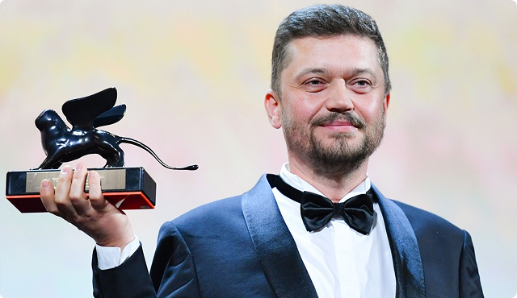

Васянович Валентин
Загальна інформація
Валентин Миколайович Васянович (нар. 21 липня 1971, Житомир) — український режисер, сценарист та продюсер. Лауреат конкурсної програми Orizzonti / Горизонти (2019; кінострічка «Атлантида») та номінант головної нагороди Leone d'Oro / Золотий лев (2021; кінострічка «Відблиск») Венеційського кінофестивалю. Лауреат Національної премії України імені Тараса Шевченка (2019; кінострічка «Атлантида»)

Валентин Васянович
Біографія
Громадянська позиція
Васянович публічно виступає за розвиток українськомовного контенту в Україні, та за відвоювання медіапростору від засилля російськомовного та російсько-українського суржикомовного медіаконтенту. У жовтні 2020 року в інтерв'ю українського видання birdinflight.com Васянович зазначив, що «суржик — це рак української мови, він є результатом російської експансії в Україну. Зараз нас перегинають в інший бік: мовляв, що це за мова неправдоподібна, даєш суржик! Навіщо підтримувати цю хворобу?». Пізніше у грудні 2020 року в інтерв'ю українському виданню lb.ua він підкреслив, що у мові героїв своїх фільмів йому найважливіше «щоб не було суржику. Я просто не хочу підтримувати цю традицію і підігрівати тим людям, які кажуть, що „суржик наше все“ і дає відчуття „українськості“ мови. Я проти цього, я за чисту мову. Там можуть бути матюки, але не може бути суржику, я з цим борюсь».
Фільмографія
- 2022 Відблиск
- 2019 Згода
- 2017 Рівень чорного
- 2013 Плем`я
- 2011 Присмерк